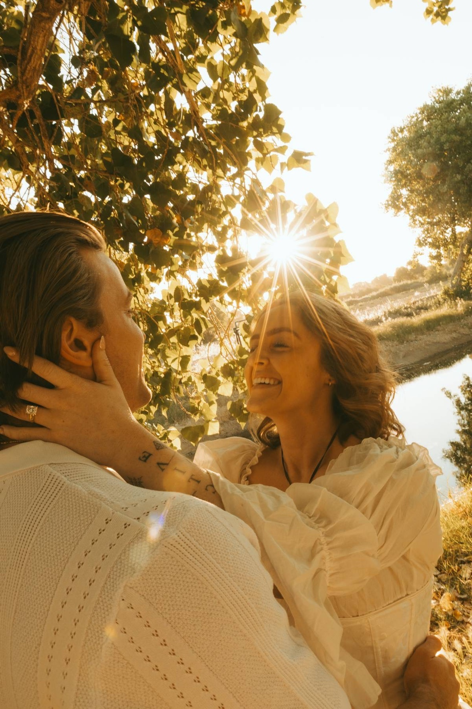
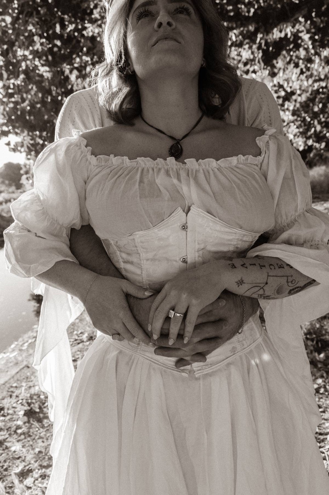
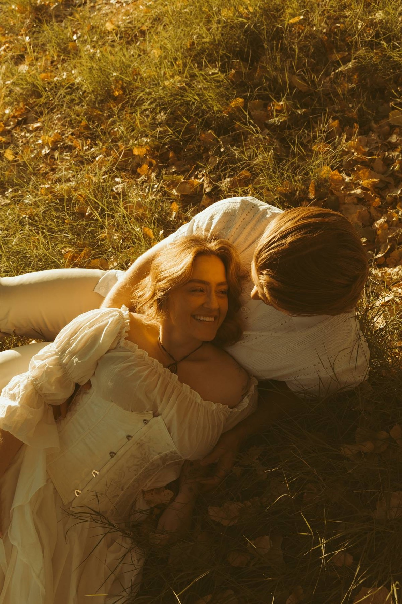
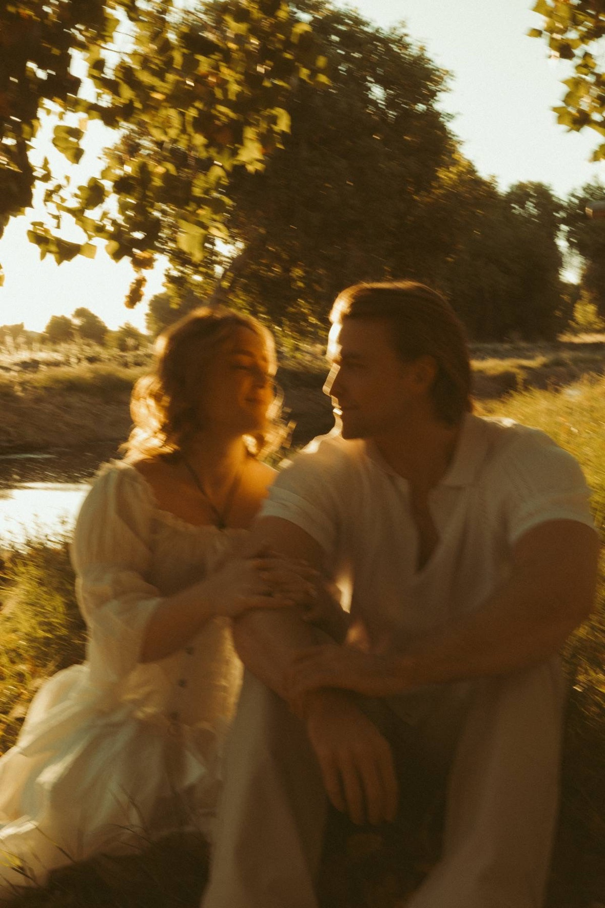
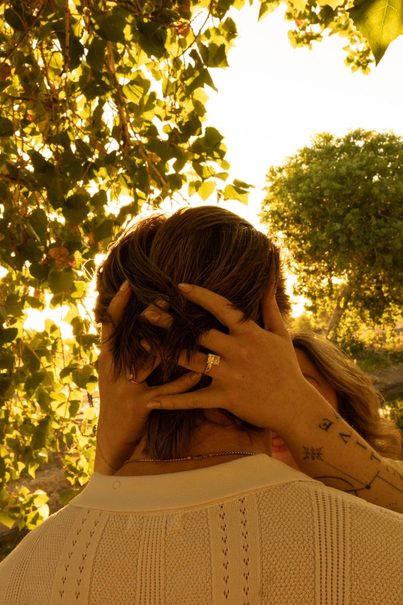
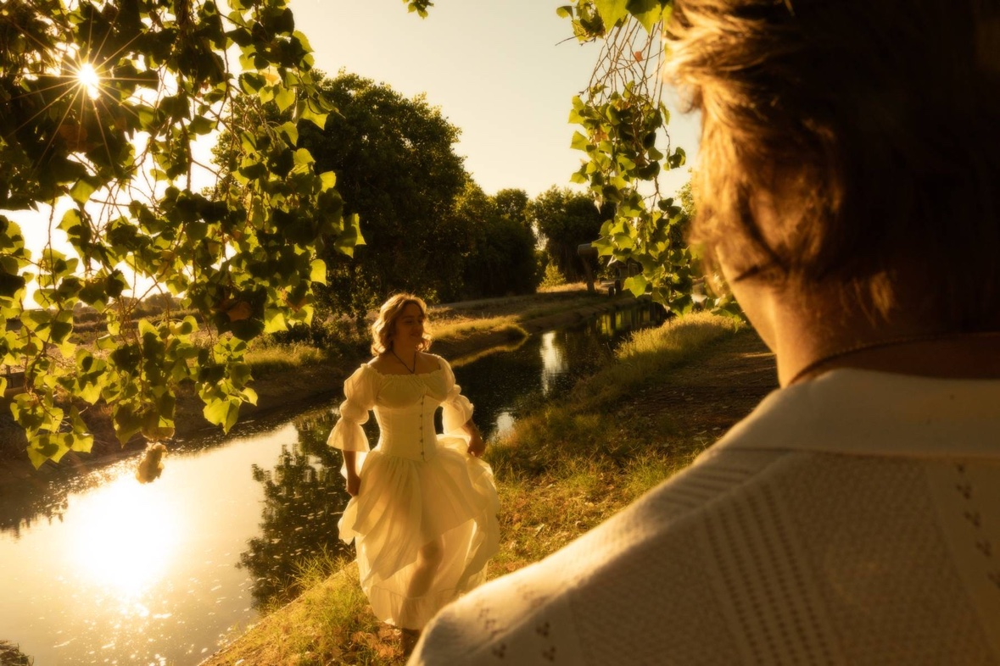
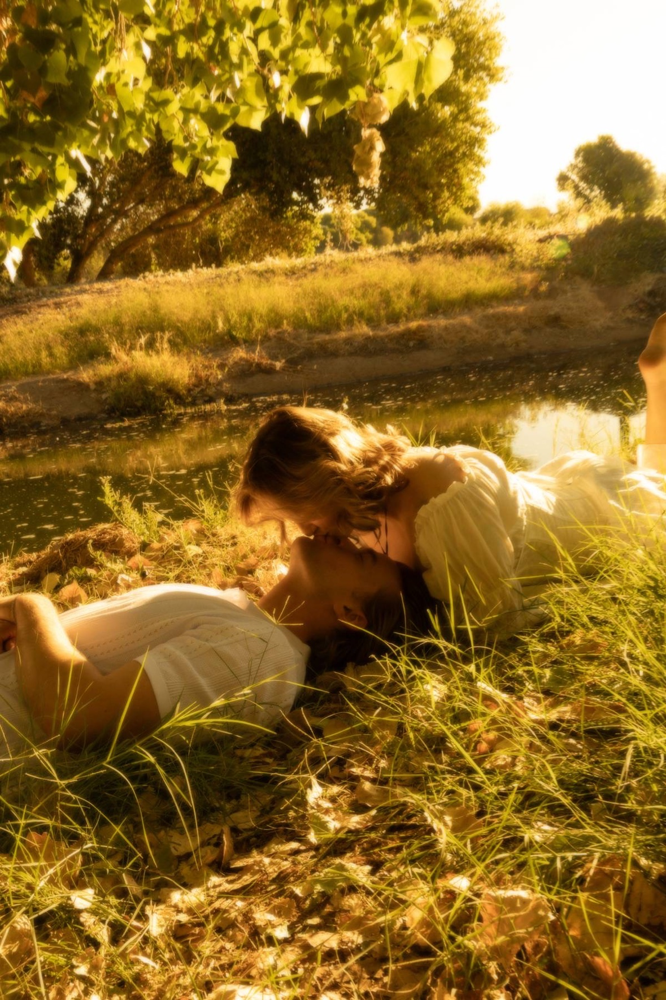

About Us
How Sadie & Jaron got here — in their own words.
Long story short, it all started in August of 2021.
We didn’t meet in some movie-scene way — we met the very modern way, on the internet, probably both pretending we weren’t that nervous about it. One message turned into another, and another, until talking to each other became the best part of the day.
And then came our first date: a coffee shop. Just coffee, just talking — except we talked for hours, until they literally closed. Neither of us wanted to leave, and neither of us wanted that feeling to end. It was one of those things where you don’t realize it’s the beginning of something big until you’re already in it.
Nine months later, we moved in together.
Which sounds simple until you actually do it — suddenly you’re learning everything about a person. Who leaves dishes in the sink. Who steals the blankets. Who is absolutely right about where the couch should go. We figured it out though, mostly by laughing through it, and that little first place together became home in a way neither of us expected.
Since then, we’ve moved into a bigger apartment, and somehow our life got bigger right along with it. We’ve been in school, graduated, started working, traveled whenever we could, and grown up together — not in the boring, all-at-once way, but in the slow, everyday way. The late-night talks, the random adventures, the “let’s just go see where this road goes” days. We’ve adopted animals together, which is really just code for: our house is now run by very cute, very demanding little bosses, and we wouldn’t have it any other way.
Through all of it, we’ve just kept choosing each other. Through the busy seasons and the quiet ones, the big milestones and the totally ordinary Tuesdays that somehow still felt special because we were together.
Then came the proposal — at home, right where our life actually happens.
He’d been waiting for the perfect moment, holding onto the question, hoping he’d know it when he felt it. But one night, in our own home, surrounded by the life we’d already built together, he realized he didn’t want to wait for perfect anymore. He loved our life — the ordinary days, the laughter, the way home finally felt like home because we were in it together — and he wanted to keep moving forward, together, for the rest of our lives.
So he asked me, right there, in the middle of everything we already were. And in that moment, everything felt exactly right — like all the little moments before it had been leading us here all along.
It was rare. We were there. And now we get to write the next chapter together — forever, starting September 9, 2027.
We can’t wait to celebrate it with you.
Moments
From their engagement shoot, at golden hour.







1 / 7